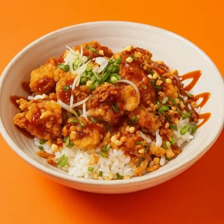
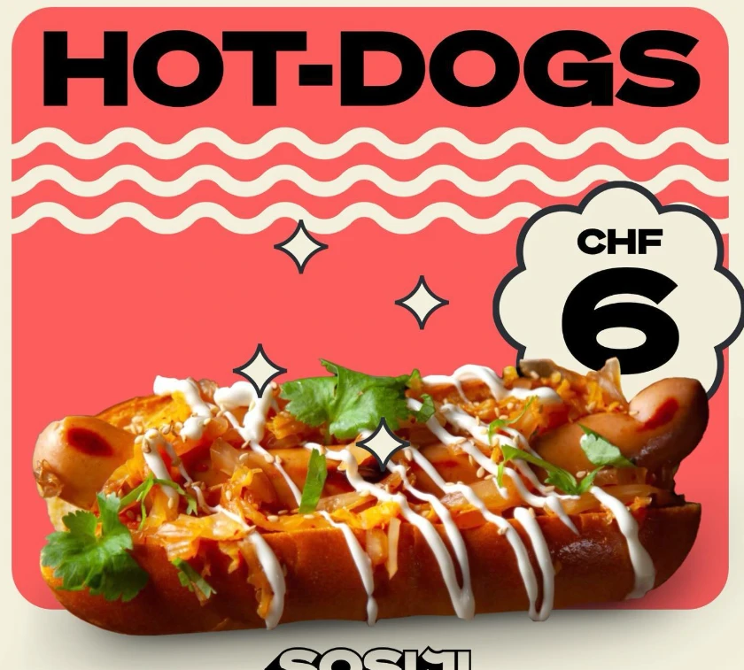
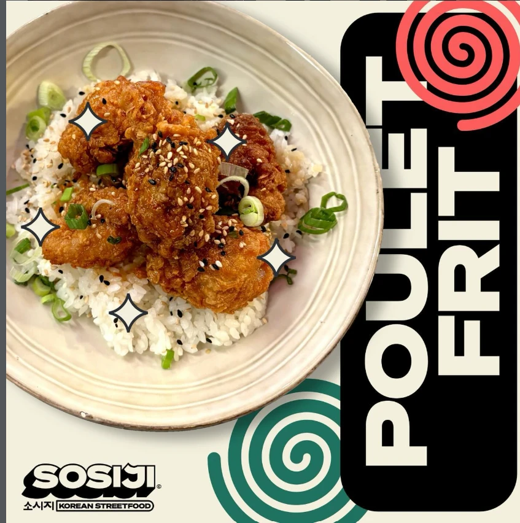
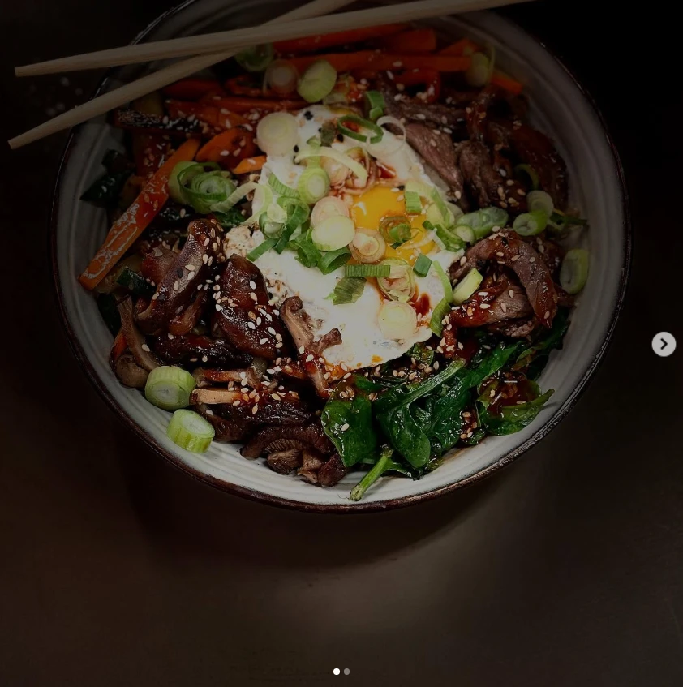
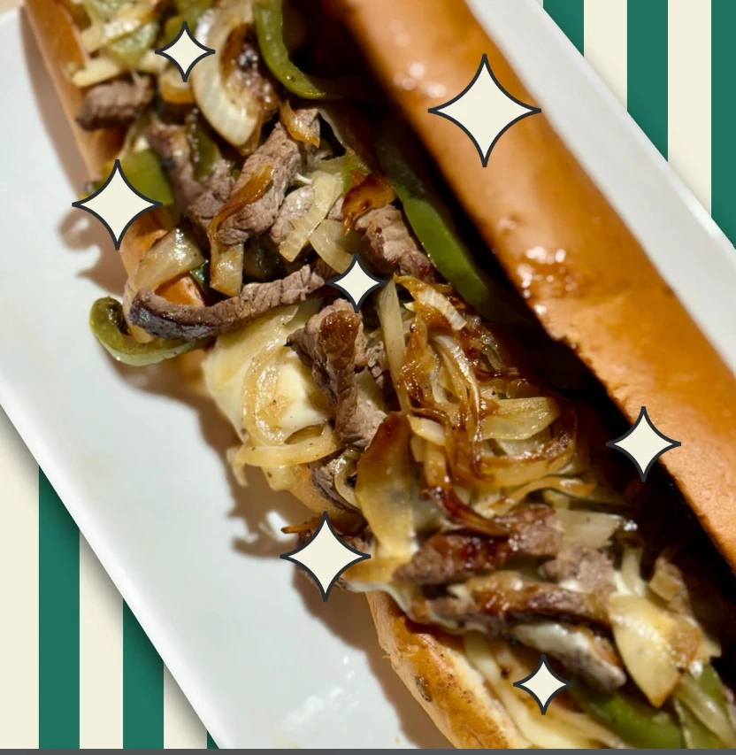

크리스피 치킨 볼
Crousty Chikin Bowl
Le bol généreux qui met tout le monde d'accord : une base de riz, du poulet ultra croustillant et ses sauces.
CHF 20.90
안녕하세요! · Bienvenue
Crousty Chikin Bowl, poulet frit au gochujang, bibimbap et kimchi dogs. Comme dans les ruelles de Myeongdong — sans prendre l'avion.

이야기 · Notre histoire
« Sosiji », c'est le mot coréen pour saucisse. Un clin d'œil aux stands de rue de Séoul, où l'on croque un hot-dog entre deux néons, la K-pop à fond dans les enceintes.
Chez nous, c'est la même énergie : des recettes coréennes généreuses, des sauces qui piquent juste ce qu'il faut, et une ambiance qui fait voyager.
서울 바이브 · Seoul vibes
La cuisine de rue fait partie de l'âme de la Corée. Voici ce qui nous inspire.
Les tentes orange de Séoul où l'on mange tard dans la nuit, au coude à coude.
Couleurs flashy, énergie à 200 % et playlists qui tournent en boucle en cuisine.
Le quartier des stands de street food : hot-dogs, brochettes et poulet frit à chaque coin.
Chi(킨) + maek(주) : poulet frit + bière, le duo culte des soirées coréennes.
Mini cours de coréen ✦
인스타그램 · Instagram



오시는 길 · Nous trouver
Adresse à compléter
18:30 – 22:00
Téléphone / e-mail à compléter